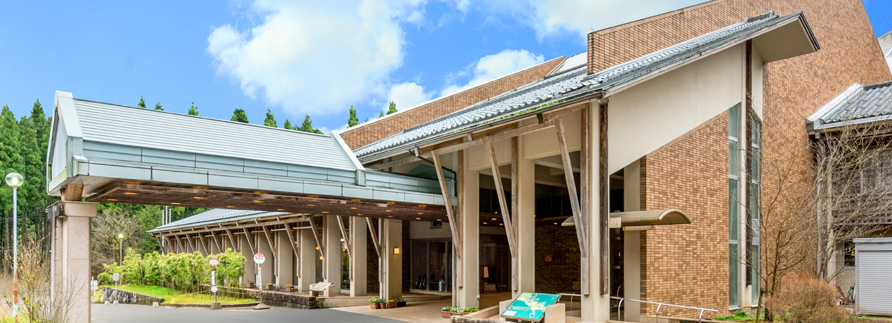
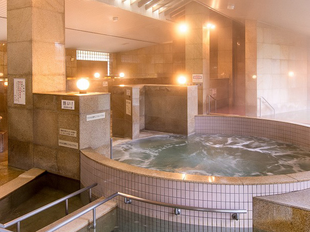
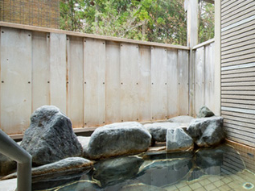

や ： やわらかな美人の湯 越前唯一 しきぶ温泉湯楽里
一言でいうと？
日帰りもお泊りもできる隠れ温泉

木に囲まれた静かなロケーションの中、隠れ家のような湯宿です。日帰り休憩、宿泊、宴会にも利用することができます。越前市唯一の温泉です。
県外からなど遠くからお風呂に入りに来る人もたくさんいます。
どんな温泉？
11種類の温泉が楽しめる！


35℃から45℃までと温度の違う5つのお風呂の他、薬湯、ジャグジー、露天風呂など11種類の充実したお風呂が楽しめます。
通称「美人の湯」と呼ばれる滑らかなお湯が自慢です！
効能としては、切り傷、神経症、五十肩、疲労回復などがあります。
お問い合わせ
0778-25-7800
住所 ≫ 越前市白崎町68-8
営業時間 ≫ 6：00～23：00(入浴時間)
休館日 ≫ 第2水曜日
電話 ≫ 0778-25-7800
宿泊の場合
チェックイン16：00／チェックアウト10：00
■入館料
・大人(65歳未満) 650円
(※6：00~9：00、17：00~23：00は600円になります)
・高齢者(65歳以上) 600円
・こども(3~15歳) 300円
・障がい者 500円
家族で何度か訪れたことがあります。山の中にありますが、全然古めかしくなくて綺麗な温泉宿です。昔は長～い階段を上っていけたのですが、今は斜めに動くエレベーターがついています。施設も充実していてリラックスできること間違いなしです！